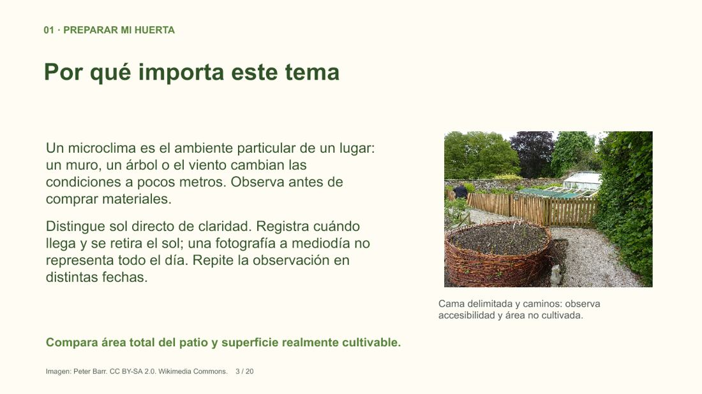
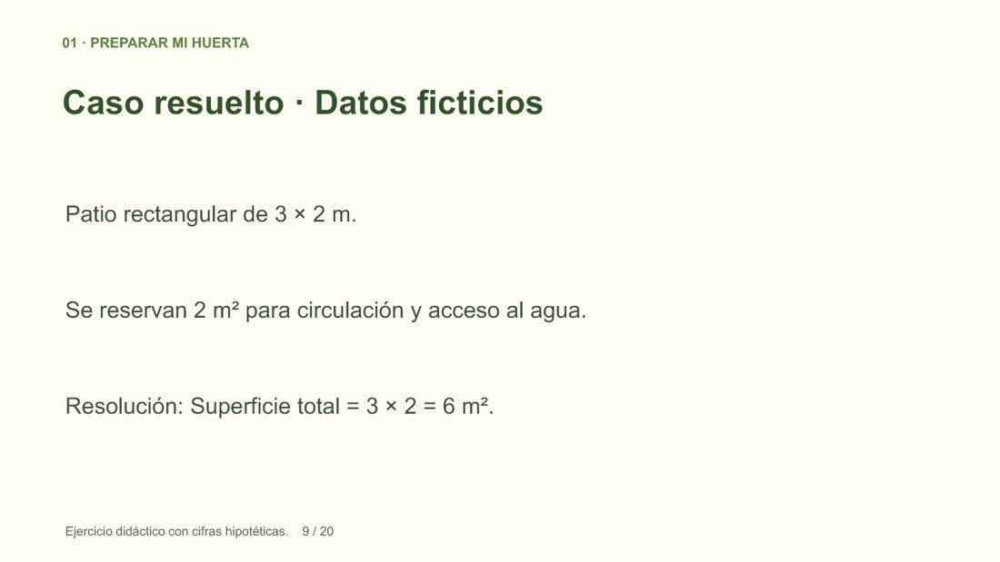
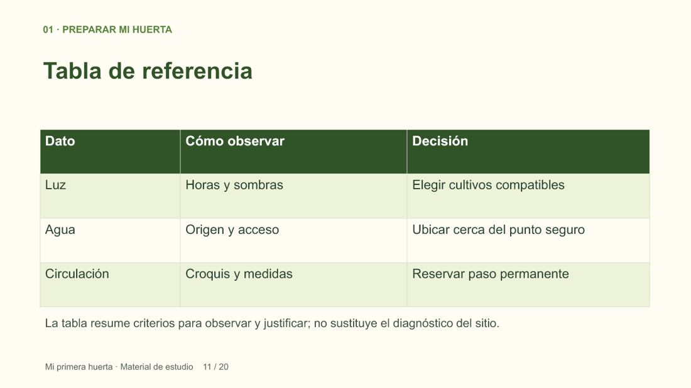

CLASE GRATUITA · SIN REGISTRO
Elegir el lugar de mi huerta
Extracto de Mi primera huerta. Cuatro diapositivas de la primera presentación. El curso completo tiene 12 temas.
DIAPOSITIVA 1 DE 4 · ORIGINAL 1

Leer explicación y fuentes
Elegir el lugar de mi huerta
De la siembra a la cosecha · Curso para comenzar
José Ignacio Farías · Ingeniero Agrícola
DIAPOSITIVA 2 DE 4 · ORIGINAL 3

Leer explicación y fuentes
Por qué importa este tema
Un microclima es el ambiente particular de un lugar: un muro, un árbol o el viento cambian las condiciones a pocos metros. Observa antes de comprar materiales.
Distingue sol directo de claridad. Registra cuándo llega y se retira el sol; una fotografía a mediodía no representa todo el día. Repite la observación en distintas fechas.
Observación de la imagen: Cama delimitada y caminos: observa accesibilidad y área no cultivada.
Aplicación del tema: Compara área total del patio y superficie realmente cultivable.
DIAPOSITIVA 3 DE 4 · ORIGINAL 9

Leer explicación y fuentes
Caso resuelto · Datos ficticios
Patio rectangular de 3 × 2 m.
Se reservan 2 m² para circulación y acceso al agua.
Resolución: Superficie total = 3 × 2 = 6 m².
DIAPOSITIVA 4 DE 4 · ORIGINAL 11

Leer explicación y fuentes
Tabla de referencia
La tabla resume criterios para observar y justificar; no sustituye el diagnóstico del sitio.
Practica con un caso
- Patio rectangular de 3 × 2 m.
- Se reservan 2 m² para circulación y acceso al agua.
Un patio mide 4 × 2 m y reserva 3 m² de paso. ¿Qué superficie queda?
Ver resolución y explicación
4 × 2 − 3 = 5 m² de superficie propuesta; comprueba accesibilidad.
- Superficie total = 3 × 2 = 6 m².
- Superficie cultivable propuesta = 6 − 2 = 4 m².
- Dibuja dónde quedarán los 4 m² sin bloquear el paso.
Cuaderno de muestra
Tres páginas del material del estudiante. Puedes leerlas en el navegador o guardarlas.
Abrir cuaderno PDF Descargar PDFCréditos de la presentación de origen